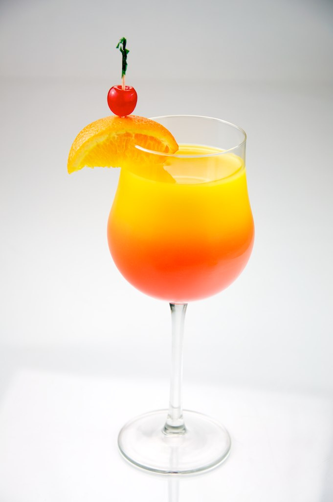

Tequila Sunrise

Description
The two-toned, sunrise-like appearance of this cocktail makes it as welcome on a cool day as it is on a hot day.
Ingredients
- 1 ½ cups ice
- 2 fluid ounces tequila
- 4 fluid ounces orange juice
- 1 cup ice
- ¾ fluid ounce grenadine syrup
Steps
- Fill a highball glass with 1 1/2 cups ice and set aside.
- Combine tequila and orange juice in a cocktail mixing glass. Add 1 cup ice, stir, and strain into the prepared highball glass. Slowly pour in grenadine and let settle
- Stir before drinking